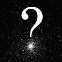

Your Sky Help: Precession
The north pole of the Earth doesn't stay pointed at a fixed direction
in space. Like a wobbling top, the Earth precesses, tracing out a
full circle in the sky every 25,800 years. Since the Earth's axis of
rotation is inclined 23.5° to the ecliptic (the plane in which it
orbits the Sun), the radius of the circle traced out by the north pole
in the sky is the same: 23.5°. As the Earth's axis slowly turns in
space, the position of all the stars as seen from Earth, changes.
“Polaris” is only the pole star at the moment; it reaches its closest
point to the true north pole in the year
2105.
By
A.D. 13000
brilliant Vega will point the way north, at which time
our Polaris will be an obscure star almost 45 degrees from the pole.
Precession is often called “the precession of the equinoxes”, since
one of its most obvious consequences is the slow progression of the
position of the Sun at the time of the equinoxes from constellation to
constellation over the centuries.
Precession is both the bane and the guaranteed meal ticket of the
positional astronomer. Astronomers record the positions of celestial
bodies in an equatorial coordinate system—based on the
Earth's equator and poles. But since the poles move with respect to
the stars, any position must be qualified by the date for which the
position is valid (its “epoch”). Converting positions from one epoch
to another is tedious yet necessary, and has provided gainful
employment for generations of unimaginative astronomers. Your
Sky takes into account effects of precession over distant spans
of time. All catalogues used by Your Sky are referenced to
the current standard epoch of J2000.0 and are valid for most
non-critical purposes for the 50 year period from 1975 through 2025.
Since correcting the positions of tens or hundreds of thousands of
stars for precession is time consuming, Your Sky normally
neglects the effects of precession as long as the date is within that
interval: outside the half century centred on A.D. 2000, precession is
calculated for all objects.
Return to Your Sky
Other Help